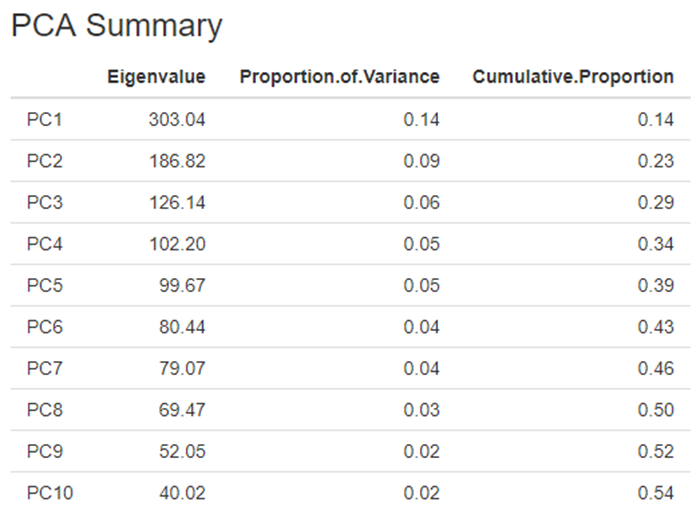
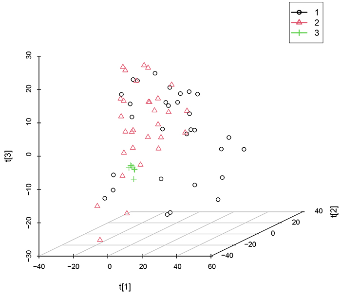

二、数据格式


注：
1、数据格式为“.csv”
2、数据变量名必须为英文、阿拉伯数字或下划线的组合
3、变量列数需输入多列，以英文状态下的逗号或冒号分隔，如：2,3,4或2:4
示例如下：

如果选择绘制三维PCA得分图，此处展示前三个主成分对应的PCA得分图。
示例如下：

下载表格后，有三张表单，分别是Component（各主成分的特征值）、 Rotation（主成分的特征向量） 和 Pc_value（每个观测的主成分得分值）